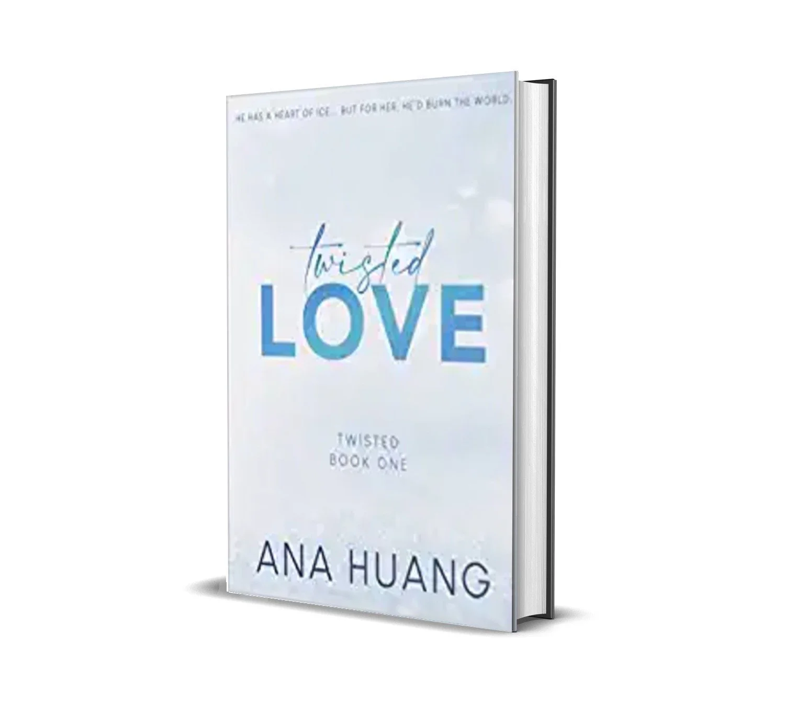

REVIEW PAGE
1.Panchatantra
Panchatantra is a colllection of ancient Indian fables,roughly divided into five(pancha)texts(tantra).The original text were composed in sanskrit. They date back to 300 BCE, making them around 2300 years old.The wisdom within them is timeless.The fables use various animals as a mean of storytelling amd impart valuable lessons within each story.It contain 10 animal-themed stories morals that will impart life lessons to kids.The book contains comical illustrations that will keep kids hooked on to the book.
2.Book of M
Set in a dangerous near future world, The Book of M tells the captivating story of ordinary people caught in an extraordinary catastrophe, risking everything to save the ones they love. In the middle of a market in India, a man’s shadow disappears. This mysterious phenomenon spreads like a plague, and while those afflicted gain a strange new power, it comes at a horrible price: the loss of all their memories. Two years later, Ory and Max have escaped the Forgetting by hiding in an abandoned hotel deep in the woods. Their new life feels almost normal, until one day Max’s shadow disappears. Knowing that her condition makes her dangerous, Max runs away. But Ory refuses to give up the time they have left together. Desperate to find Max before her memories disappear, he sets out into a perilous, unrecognizable world.
3.Ikigai
Ikigai can describe having a sense of purpose in life, as well as being motivated. According to a study by Michiko Kumano, feeling ikigai as described in Japanese usually means the feeling of accomplishment and fulfillment that follows when people pursue their passions. Activities that generate the feeling of ikigai are not forced on an individual; they are perceived as being spontaneous and undertaken willingly, and thus are personal and depend on a person's inner self. According to psychologist Katsuya Inoue, ikigai is a concept consisting of two aspects: "sources or objects that bring value or meaning to life" and "a feeling that one's life has value or meaning because of the existence of its source or object". Inoue classifies ikigai into three directions – social ikigai, non-social ikigai, and anti-social ikigai – from a social perspective. Social ikigai refers to ikigai that are accepted by society through volunteer activities and circle activities. An asocial ikigai is an ikigai that is not directly related to society, such as faith or self-discipline. Anti-social ikigai refers to ikigai, which is the basic motivation for living through dark emotions, such as the desire to hate someone or something or to continue having a desire for revenge.
4.Harry potter

An irresistible new edition of Harry Potter and the Philosopher's Stone created with ultra-talented designers MinaLima, the design magicians behind the gorgeous visual graphic style of the Harry Potter and Fantastic Beasts films. J.K. Rowling's complete and unabridged text is accompanied by MinaLima's handsome colour illustrations on nearly every page, superb design, and eight exclusive interactive paper-engineered elements - including Harry's Hogwarts letter, the magical entrance to Diagon Alley, a sumptuous feast in the Great Hall of Hogwarts and more.Designed and illustrated by the iconic house of MinaLima - best known for establishing the graphic design of the Harry Potter and Fantastic Beasts films - this is the perfect gift for Harry Potter fans and a beautiful addition to any collector's bookshelf, enticing readers of all ages to discover the Harry Potter novels all over again.
5.Twisted Love
He has a heart of ice‚Ķbut for her, he‚Äôd burn the world. Alex Volkov is a devil blessed with the face of an angel and cursed with a past he can‚Äôt escape. Driven by a tragedy that has haunted him for most of his life, his ruthless pursuits for success and vengeance leave little room for matters of the heart. But when he‚Äôs forced to look after his best friend‚Äôs sister, he starts to feel something in his chest: A crack. A melt. A fire that could end his world as he knew it. Ava Chen is a free spirit trapped by nightmares of a childhood she can‚Äôt remember. But despite her broken past, she‚Äôs never stopped seeing the beauty in the world‚Ķincluding the heart beneath the icy exterior of a man she shouldn‚Äôt want. Her brother‚Äôs best friend. Her neighbor. Her savior and her downfall. Theirs is a love that was never supposed to happen‚Äîbut when it does, it unleashes secrets that could destroy them both‚Ķand everything they hold dear.
6.Right Behind You

Eight years ago, Sharlah May Nash's older brother beat their drunken father to death with a baseball bat in order to save both of their lives. Now thirteen years old, Sharlah has finally moved on. About to be adopted by retired FBI profiler Pierce Quincy and his partner, Rainie Conner, Sharlah loves one thing best about her new family: They are all experts on monsters.
7.The Old Man And The Sea
“The Old Man and the Sea” is the last major work of fiction written by Ernest Hemingway, the revered American novelist in 1951. The novel won the Pulitzer Prize for Fiction in 1953 and it was also a contributing work in the Nobel prize in literature that was awarded to Ernest Hemingway in 1954. The novel is about Santiago, an aging fisherman who hasn’t caught a fish in 84 days and is thus deemed as unlucky. Even his young protege Manolin, whom Santiago has trained since childhood, is also forced by his parents to work on a luckier boat away from Santiago. Desperate to end his unlucky streak, Santiago decides to venture far out into the Gulf Stream, north of Cuba and into the Straits of Florida. Will he be able to end his unlucky streak and will Manolin ever return to Santiago? Guess you will have to read to find out.
8.Gitanjli

Translated by Tagore himself, the book is a collection of translated poems from the original Bengali version of Gitanjali. An integration of two words, 'Git' and 'Anjali,' meaning song and offering respectively, the literal meaning of the word is 'offering of songs.' Gitanjali was inspired by medieval Indian lyrics of devotion in which the principal subjects is love, though some poems detail the internal conflict between spiritual longings and earthly desires. Each poem gives readers an essence of the various elements of Mother Nature and makes one feel connected to nature while reading them. It highlights the poet's intense response to the magnificence of the universe or rather an affirmation of life with all its abundance, mystery and diversity. Tagore received the Nobel Prize for Literature, largely for the English translation, Song Offerings. It is part of the UNESCO Collection of Representative Works.
9.It Ends With You

The newest, highly anticipated novel from beloved #1 New York Times bestselling author, Colleen Hoover. Sometimes it is the one who loves you who hurts you the most. Lily hasn?t always had it easy, but that's never stopped her from working hard for the life she wants. She?s come a long way from the small town in Maine where she grew up?she graduated from college, moved to Boston and started her own business. So when she feels a spark with a gorgeous neurosurgeon named Ryle Kincaid, everything in Lily?s life suddenly seems almost too good to be true. Ryle is assertive, stubborn, maybe even a little arrogant. He?s also sensitive, brilliant and has a total soft spot for Lily. And the way he looks in scrubs certainly doesn?t hurt. Lily can not get him out of her head. But Ryle?s complete aversion to relationships is disturbing. Even as Lily finds herself becoming the exception to his ?no dating? rule, she can not help but wonder what made him that way in the first place. As questions about her new relationship overwhelm her, so do thoughts of Atlas Corrigan?her first love and a link to the past she left behind. He was her kindred spirit, her protector. When Atlas suddenly reappears, everything Lily has built with Ryle is threatened. With this bold and deeply personal novel, Colleen Hoover delivers a heart-wrenching story that breaks exciting new ground for her as a writer. Combining a captivating romance with a cast of all-too-human characters, it ends with us is an unforgettable tale of love that comes at the ultimate price.
10.It Start With You
I lived every emotion both Atlas and Lily were going through while reading. Each scenario, each line, each emotion hits you hard. I felt love a lot while reading. I laughed a lot while reading. I smiled a lot while reading. Theo was such an incredible character. I was intrigued everytime Atlas was having a conversation with Theo. I laughed so hard everytime he made up some cheesy line to tease Atlas. I really appreciated Lily's character and strength in it ends with us too, just as much I appreciated her for the same in It starts with us. She really is an inspiring female mc. Josh, Emerson, Rylee, Allysa, Marshall, Lily's mother, and all the other characters made me fall for them even more everytime. The book kept me hooked from the beginning and I binged read it in 1.5 days. I believe each of us deserves an Atlas Corrigan in our lives. I am gonna re-read the book, and I am sure I'll read it over and over without getting bored. Every part of me loved the book. ü§ç